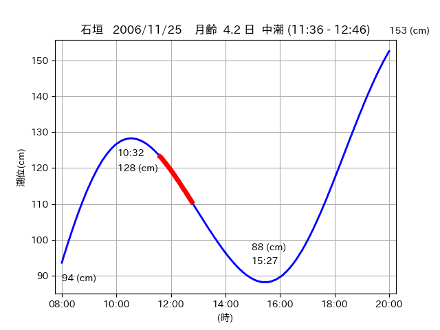
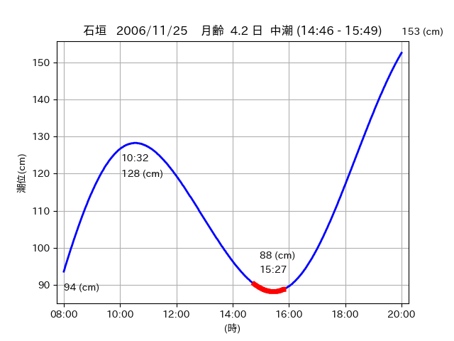

<!DOCTYPE html>
<html>
<head>
    
    <meta http-equiv="content-type" content="text/html; charset=UTF-8" />
    
        <script>
            L_NO_TOUCH = false;
            L_DISABLE_3D = false;
        </script>
    
    <style>html, body {width: 100%;height: 100%;margin: 0;padding: 0;}</style>
    <style>#map {position:absolute;top:0;bottom:0;right:0;left:0;}</style>
    <script src="https://cdn.jsdelivr.net/npm/leaflet@1.9.3/dist/leaflet.js"></script>
    <script src="https://code.jquery.com/jquery-3.7.1.min.js"></script>
    <script src="https://cdn.jsdelivr.net/npm/bootstrap@5.2.2/dist/js/bootstrap.bundle.min.js"></script>
    <script src="https://cdnjs.cloudflare.com/ajax/libs/Leaflet.awesome-markers/2.0.2/leaflet.awesome-markers.js"></script>
    <link rel="stylesheet" href="https://cdn.jsdelivr.net/npm/leaflet@1.9.3/dist/leaflet.css"/>
    <link rel="stylesheet" href="https://cdn.jsdelivr.net/npm/bootstrap@5.2.2/dist/css/bootstrap.min.css"/>
    <link rel="stylesheet" href="https://netdna.bootstrapcdn.com/bootstrap/3.0.0/css/bootstrap-glyphicons.css"/>
    <link rel="stylesheet" href="https://cdn.jsdelivr.net/npm/@fortawesome/fontawesome-free@6.2.0/css/all.min.css"/>
    <link rel="stylesheet" href="https://cdnjs.cloudflare.com/ajax/libs/Leaflet.awesome-markers/2.0.2/leaflet.awesome-markers.css"/>
    <link rel="stylesheet" href="https://cdn.jsdelivr.net/gh/python-visualization/folium/folium/templates/leaflet.awesome.rotate.min.css"/>
    
            <meta name="viewport" content="width=device-width,
                initial-scale=1.0, maximum-scale=1.0, user-scalable=no" />
            <style>
                #map_2baef3015cf017b72d53d886210622f7 {
                    position: relative;
                    width: 2048.0px;
                    height: 1600.0px;
                    left: 0.0%;
                    top: 0.0%;
                }
                .leaflet-container { font-size: 1rem; }
            </style>
        
</head>
<body>
    
    
            <div class="folium-map" id="map_2baef3015cf017b72d53d886210622f7" ></div>
        
</body>
<script>
    
    
            var map_2baef3015cf017b72d53d886210622f7 = L.map(
                "map_2baef3015cf017b72d53d886210622f7",
                {
                    center: [24.073, 123.788],
                    crs: L.CRS.EPSG3857,
                    ...{
  "zoom": 12,
  "zoomControl": true,
  "preferCanvas": false,
}

                }
            );

            

        
    
            var tile_layer_5de7202d8f82fe8ab080f85d07d8aca1 = L.tileLayer(
                "https://cyberjapandata.gsi.go.jp/xyz/seamlessphoto/{z}/{x}/{y}.jpg",
                {
  "minZoom": 0,
  "maxZoom": 18,
  "maxNativeZoom": 18,
  "noWrap": false,
  "attribution": "\u5730\u7406\u9662\u5730\u56f3",
  "subdomains": "abc",
  "detectRetina": false,
  "tms": false,
  "opacity": 1,
}

            );
        
    
            tile_layer_5de7202d8f82fe8ab080f85d07d8aca1.addTo(map_2baef3015cf017b72d53d886210622f7);
        
    
            var marker_a803aebdd19a36daa709e0f371b83b47 = L.marker(
                [24.0741, 123.7552],
                {
}
            ).addTo(map_2baef3015cf017b72d53d886210622f7);
        
    
            var icon_fa2ca6ea4d8b23509155d03ad1654cbe = L.AwesomeMarkers.icon(
                {
  "markerColor": "orange",
  "iconColor": "white",
  "icon": "info-sign",
  "prefix": "glyphicon",
  "extraClasses": "fa-rotate-0",
}
            );
        
    
        var popup_79f8338c370577de1de61e5e993612d8 = L.popup({
  "maxWidth": "100%",
});

        
            
                var html_5eb07f5ccd8e40a58244d8b069da2430 = $(`<div id="html_5eb07f5ccd8e40a58244d8b069da2430" style="width: 100.0%; height: 100.0%;"><table><tr><td></td></tr><tr><td><center>20061125 No.1 </center></table></td></tr></table</div>`)[0];
                popup_79f8338c370577de1de61e5e993612d8.setContent(html_5eb07f5ccd8e40a58244d8b069da2430);
            
        

        marker_a803aebdd19a36daa709e0f371b83b47.bindPopup(popup_79f8338c370577de1de61e5e993612d8)
        ;

        
    
    
                marker_a803aebdd19a36daa709e0f371b83b47.setIcon(icon_fa2ca6ea4d8b23509155d03ad1654cbe);
            
    
            var poly_line_b775bb6fcbd9c342586b852714e1aacd = L.polyline(
                [[24.0741, 123.7552], [24.0702, 123.7486]],
                {"bubblingMouseEvents": true, "color": "#00FFFF", "dashArray": null, "dashOffset": null, "fill": false, "fillColor": "#00FFFF", "fillOpacity": 0.2, "fillRule": "evenodd", "lineCap": "round", "lineJoin": "round", "noClip": false, "opacity": 1.0, "smoothFactor": 1.0, "stroke": true, "weight": 3}
            ).addTo(map_2baef3015cf017b72d53d886210622f7);
        
    
            var marker_7f15ed853cab98a9671d4a49a453f8b6 = L.marker(
                [24.0705, 123.7448],
                {
}
            ).addTo(map_2baef3015cf017b72d53d886210622f7);
        
    
            var icon_82657c7cc4b35f59e951fef00a4f2961 = L.AwesomeMarkers.icon(
                {
  "markerColor": "orange",
  "iconColor": "white",
  "icon": "info-sign",
  "prefix": "glyphicon",
  "extraClasses": "fa-rotate-0",
}
            );
        
    
        var popup_49aea67c4253be19af65a210733eb36b = L.popup({
  "maxWidth": "100%",
});

        
            
                var html_4aa6aa4b97edd90e0f5aed52c5809f0d = $(`<div id="html_4aa6aa4b97edd90e0f5aed52c5809f0d" style="width: 100.0%; height: 100.0%;"><table><tr><td></td></tr><tr><td><center>20061125 No.2 </center></table></td></tr></table</div>`)[0];
                popup_49aea67c4253be19af65a210733eb36b.setContent(html_4aa6aa4b97edd90e0f5aed52c5809f0d);
            
        

        marker_7f15ed853cab98a9671d4a49a453f8b6.bindPopup(popup_49aea67c4253be19af65a210733eb36b)
        ;

        
    
    
                marker_7f15ed853cab98a9671d4a49a453f8b6.setIcon(icon_82657c7cc4b35f59e951fef00a4f2961);
            
    
            var poly_line_5a459f02f8c8607d98f66c091078bdeb = L.polyline(
                [[24.0705, 123.7448], [24.0612, 123.737]],
                {"bubblingMouseEvents": true, "color": "#00FFFF", "dashArray": null, "dashOffset": null, "fill": false, "fillColor": "#00FFFF", "fillOpacity": 0.2, "fillRule": "evenodd", "lineCap": "round", "lineJoin": "round", "noClip": false, "opacity": 1.0, "smoothFactor": 1.0, "stroke": true, "weight": 3}
            ).addTo(map_2baef3015cf017b72d53d886210622f7);
        
    
            var marker_5331ef336cb763da9dcf7575636e963e = L.marker(
                [24.074, 123.7835],
                {
}
            ).addTo(map_2baef3015cf017b72d53d886210622f7);
        
    
            var icon_52882fdb0da0e4e4ec83e8b94b64c0dc = L.AwesomeMarkers.icon(
                {
  "markerColor": "orange",
  "iconColor": "white",
  "icon": "info-sign",
  "prefix": "glyphicon",
  "extraClasses": "fa-rotate-0",
}
            );
        
    
        var popup_3322ceb653bf5caebb28ca7b0fec8dca = L.popup({
  "maxWidth": "100%",
});

        
            
                var html_ebb8d36dfe6335e220566550f0f0dbaf = $(`<div id="html_ebb8d36dfe6335e220566550f0f0dbaf" style="width: 100.0%; height: 100.0%;"><table><tr><td></td></tr><tr><td><center>20061125 No.3 </center></table></td></tr></table</div>`)[0];
                popup_3322ceb653bf5caebb28ca7b0fec8dca.setContent(html_ebb8d36dfe6335e220566550f0f0dbaf);
            
        

        marker_5331ef336cb763da9dcf7575636e963e.bindPopup(popup_3322ceb653bf5caebb28ca7b0fec8dca)
        ;

        
    
    
                marker_5331ef336cb763da9dcf7575636e963e.setIcon(icon_52882fdb0da0e4e4ec83e8b94b64c0dc);
            
    
            var poly_line_7c753143d3cd30b15c7e4425d92be73f = L.polyline(
                [[24.074, 123.7835], [24.072, 123.7927]],
                {"bubblingMouseEvents": true, "color": "#00FFFF", "dashArray": null, "dashOffset": null, "fill": false, "fillColor": "#00FFFF", "fillOpacity": 0.2, "fillRule": "evenodd", "lineCap": "round", "lineJoin": "round", "noClip": false, "opacity": 1.0, "smoothFactor": 1.0, "stroke": true, "weight": 3}
            ).addTo(map_2baef3015cf017b72d53d886210622f7);
        
</script>
</html>